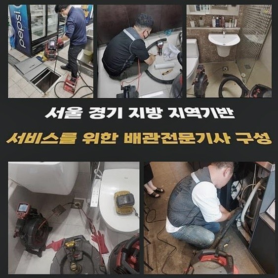
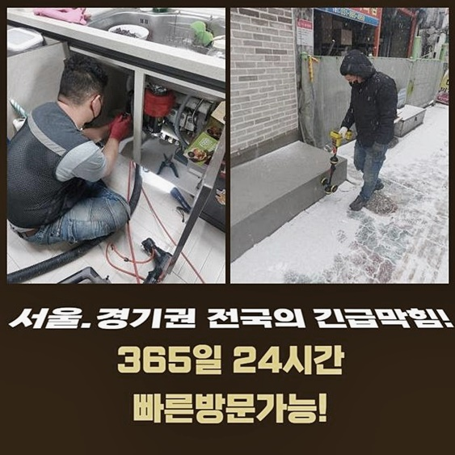
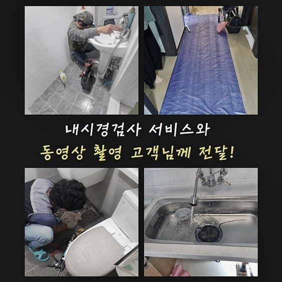
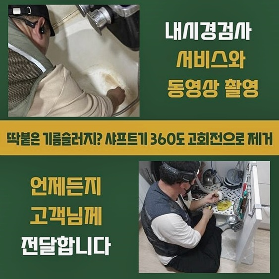
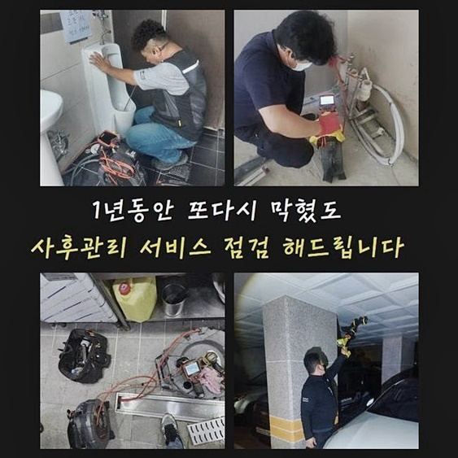
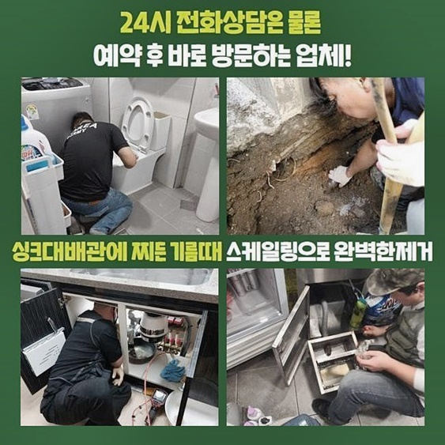

🏠 성동구 마장동하수구뚫음 왕십리도선동 하수구뚫어주는업체 출장수리
용인시 처인구 고압세척 전문 시공 후기

📋 작업 개요
- 위치: 용인시 처인구, 수원시 영통구, 화성시 동탄
- 서비스 유형: 고압세척, 내시경점검
- 작업 일시:
- 업체명: 하수구수사대 (010-5615-2118)
🔍 문제 상황
배관들이 막혀버렸다면 배수관로 내시경기기를 사용하여 진단후 꽉 막혀버린 형태를 보고 물이 흐르게 하는 수리방법이 시작됩니다
건물내부의 오류로 인해 밖으로 돌출된 하수라인이 막혀버린 상황이라면 전체적인 진단으로 작업들이 이루어져야 합니다
성동구 마장동하수구뚫음 왕십리도선동 하수구뚫어주는업체 출장수리
먼저 바깥쪽 하수라인은 관통 자체로도 상당히 크고 모든구간이 길게 자리잡기에 현장을 파악하는것부터 통수시키는 스케일링작업들까지 결코 쉽지않은 작업입니다
혹시라도 건물 외벽으로 나와있는 문제들로 생각되신다면 많은 경력이 요구되는 고강도 수리과정이 필요하니 검증된 전문가를통해 작업을 문의해보세요
이번현장은 지하주차장에 연결된 메인 하수시스템이 막혀버린 사태가 일어난 곳입니다
우선 메인배관들이 연결되어 있는 건물외벽 하수구부터 점검을 시행했습니다
주차관리자분 말씀을 들어보니 바깥쪽 배관라인에서 큰본관까지 전부 막힌정도가 최악이라고 이야기 해주셨습니다

🔎 원인 분석
💡 전문가 진단: 정밀 진단 장비를 사용하여 슬러지의 고착 여부를 판명하고 타격/세척 작업을 실시했습니다.
불순물의 특성을 규명 해보았습니다
이후로는 천장에서 작업해야 되는 배관의 진단을 시작해야 했으나 천장에 위치해 작업환경이 확보되지 못해 안전장치를 준비했습니다
위험한 부분없이 작업장이 확인되어야 진행도 문제없이 이루어집니다
첫번째로 높은곳에 있는 횡주관들은 저마다의 구조인데 오류 섹션을 알아내서, 해당 부분으로 내시경카메라를 적절히 쓰면서 배관들 안쪽의 체증상태를 진단하고 불순물의 성격을 규정해냅니다
진행과정에서 관내부로 내부를 비추는 라인을 집어넣기위해 배관에대한 타공작업이 필요시됩니다
모터드릴를 활용하여 장비가 진입할수있는 최소의 크기로 뚫는 작업 이후 해당부위로 내시경을 밀어넣어 모든 라인의 스케일링과 파악을 진행했습니다
모두 완료된후 내시경 투입했던 구멍에관하여 꼼꼼한 원상복구로 추후 발생할 수 있는 기타현상에 큰걱정 하지않으셔도 돼요
작업을 통해 배관의 내부 노폐물의 상태를 확인해봤습니다
검사 결과 메인 배관의 상당히 많은 부위들에 오염물질이 형성된 상황이었고 건물밖 하수관으로 붙은 곳까지 단단히 굳은 오래된 침전물이 해당사태를 발생시켰습니다

🔧 작업 과정
하수로의 벽면쪽에 오염물이 쌓여 형성한 오래된 찌거기는 시간이 지날수록 내용물이 추가적으로 더해지며 두터워지고 물들이 흐르는 배관이 점점 좁혀지며 막히는 일이 일어납니다
스케일링 작업기계로 딱딱한 침전물을 파쇄하며 작업이 완료되었습니다
안쪽을 자세히 보니 본관이 붙어있는 관통의 가생이 가까운 곳에 딱딱하게 축적된 슬러지들을 발견하게 되었습니다
특히 많은 양의 오염수가 내려가는 메인라인과 건물 바깥쪽 하수배관 안에는 쉽게 오염원이 형성되고 석회화 되어버린 찌꺼기의 형태는 매우 딱딱하고 완전밀착되는 성질로 정상적인 배수현상을 방해합니다
작업을 통해 하수구에 대한 샤프트기기 작업들로 반복적으로 문제가 재발하는 경우들이 없겠죠
타공이 완료된 본관으로 안을 불수있는 케이블을 밀어넣어 문제발생 지점을 확인하고 플랙스샤프트 장비를 쓰려고보니 이번 현장처럼 넓은 배관은 보통 사용하는 기기로는 진행이 힘듭니다
이유를 말씀드리자면 전체적으로 작업의 진행이 이뤄지는데 이물질을 제거하는 기계와 흡입기계는 부분적으로 조심스러운 오염원 제거가 진행되므로 지름이 큰 관에 보편적인 기계 활용은 비합리적인 시간들만 소모됩니다
이러한 경우에는 매우 강한 압력으로 세척하는 기기를 활용해서 정체된 관을 뚫어봅니다
종합적인 하수시스템의 모양에 맞춰 분사구 조준선을 정하고 기기의 강한 힘으로 쏘면서 관의 안쪽벽면과 배관의 내부를 확실하게 세정해내는 과정이 올바른 일처리입니다
강한 압력의 기기 사용이 반복적으로 진행되면서 분사구를 다방면으로 향하게 하고 강한 압의 물로 배관 내벽의 침전물들을 파괴합니다
형성된 층도 매우 안좋은 현장이고 중요 하수관의 특성상 오염원의 양도 많았기에 하수배관이 막히는 현상이 더 자주 일어날거라고 예측 되었습니다
또다시 동일한 불편이 발생하는 일이 없도록 전용 기기를 활용하여 잔여 오염원이 없도록 구석구석 기기의 강한 힘으로 스케일링 과정을 진행했습니다
작업을 통해 모든 작업이 끝이나면 타공이 이루어졌던 메인역할을 하는 하수로의 해당 부위에대해 본래의 상태로 메꾸는 작업들을 진행한 이후 오늘의 작업을 종료할수 있었습니다
반복적으로 배수관 문제로 불편이 없으시도록 꼼꼼하게 작은구멍을 냈던 부분을 회복시켰고 이후로 물들이 흘러가는 데 있어서 불편함은 발생하지 않을것입니다


✅ 작업 완료
이후 작업은 주변의 하수라인에 비정상적인 작동이 일어나는지 순환이 원활하게 되는지 확인 해보았으며 본관에서 바깥 하수구들까지 역류 현상없이 쉽게 배수 가능한지 일괄적으로 확인하였습니다
하수라인의 역류가 생활속 오염물로 막힌다면 건물안에서 시작하여 외벽의 하수시스템까지 배수가 종합적으로 느려지게 되므로 바로 연락을 주시는게 가장 중요합니다
이상이 발견되면 염산등으로 해결하는 것보다는 전문 작업자들의 진단과 알맞은 기계를 적절히 쓰면서 문제내용을 알아낸후 이물질제거 작업들을 적용하는것이 안전하지요
설비적 개선이 필요하시면 지금 당장 의뢰를 맡겨주세요



⚠️ 하수구 배관 막힘 예방 및 관리 가이드
- ✅ 머리카락, 비닐, 물티슈 등 물에 분해되지 않는 이물질은 절대 흘려보내지 마세요.
- ✅ 기름기 많은 식기는 설거지 전 키친타올로 먼저 기름때를 닦아내세요.
- ✅ 주기적으로 배수구에 뜨거운 물을 가득 부어주어 유지방 고착을 방지하세요.
- ✅ 작업 후 1년 이내 재발 시 무상 A/S 보증 서비스를 제공합니다.
💡 핵심 정리
- 확실한 장비 작업(내시경 점검 및 샤프트 스케일링)으로 원인을 뿌리 뽑습니다.
- 작업 후 1년 이내에 동일한 부위 재발 시 100% 무상 A/S 서비스를 보장합니다.
- 서울 · 경기 · 인천 전 지역에 24시간 언제든 긴급 출동할 수 있도록 항시 대기 중입니다.
❓ 자주 묻는 질문 (FAQ)
🚨 용인시 처인구 고압세척 문제로 고민이신가요?
정확한 원인 진단과 확실한 시공으로 재발 없는 해결을 약속드립니다.
24시간 긴급 출동 | 서울 · 경기 · 인천 전지역 | 1년 내 재발 시 무상 A/S